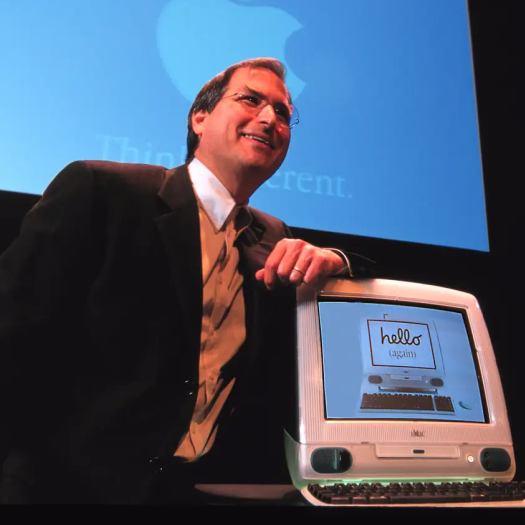

founding of apple
From Blue Boxes to AppleSteve Jobs got his start in business with another Steve, Steve Wozniak, building the blue boxes phone phreakers used to make free calls across the nation. The two were members of the HomeBrew Computer Club, where they quickly became enamored with kit computers and left the blue boxes behind. The next product the two sold was the Apple I, which was a kit for building a PC. In order to do anything with it, the customer needed to add their own monitor and keyboard. |
 |
Jobs and Wozniak created enough interestWith Wozniak doing most of the building and Jobs handling the sales, the two made enough money off the hobbyist market to invest in the Apple II. It was the Apple II that made the company. Jobs and Wozniak created enough interest in their new product to attract venture capital. This meant they were in the big leagues and their company, Apple, was officially incorporated in 1976. Steve Jobs was a month shy of turning 22 and would be a millionaire before his next birthday. |
The Roller Coaster Ride BeginsBy 1978, Apple was making $2 million in profits solely on the strength of the Apple II. The Apple II wasn't state of the art, but it did allow computer enthusiasts to create and sell their own programs. By the time Apple went public in 1980, the dynamic of the company was more or less set. Steve Jobs was the fiery visionary , with an intense and often combative management style, and Steve Wozniak was the quiet genius who made the vision work . |
The Gap YearsSteve Jobs was rich and unemployed. Although he wasn't working at Apple, he was far from idle. In 1986, Jobs purchased a controlling stake in a company called Pixar from George Lucas. The company was struggling, but their eventual success in digital animation led to an initial public offering (IPO) that earned Jobs around $1 billion. The second was a return to his old obsession with computers, founding NeXT to create high-end computers. Apple bought NeXT in 1996 for its operating system, bringing Steve Jobs back to the first company he founded. |
Getting Apple Back on TrackWhen Jobs returned, the company wasn't in a good place. Apple had begun to flounder as cheap PCs running Windows flooded the market. Jobs found himself in the driver's seat again and took some drastic steps to turn around Apple's decline. The company asked for and received a $150 million investment from Bill Gates.5 Jobs used the money to ramp up advertising and highlight the products Apple already offered while choking off research and development (R&D) money in non-producing areas. |
The Bottom LineIt's impossible to sum up Jobs' career in a single article, but a few lessons stick out. First, innovation counts for a lot, but innovative products fail without proper marketing. Second, there are no straight paths to success. Jobs did get wealthy very early on, but he would be a footnote today if he didn't return to Apple in the 90s. At one point, Jobs was kicked out of the company he helped create for being hard to work with. Rather than change, he bided his time, then took over again, and this time his attitude was seen as part of his genius. |